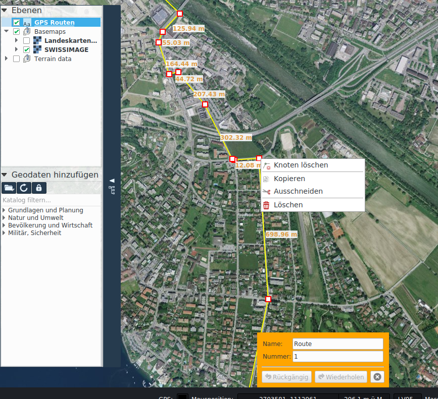

GPS
Le funzioni per l'interazione con i dispositivi GPS e per la pianificazione dei percorsi sono disponibili nella scheda GPS.
Interazione con i dispositivi GPS
Vengono supportati i dispositivi GPS che emettono il protocollo NMEA tramite un'interfaccia seriale (COM). L'applicazione Franson GPS-Gate Splitter può creare per diversi dispositivi GPS un'interfaccia COM virtuale, tramite la quale KADAS può ricevere i dati NMEA.
In KADAS, il collegamento con il dispositivo GPS viene effettuato tramite l'icona attivabile nella barra di stato oppure tramite il pulsante corrispondente nella scheda GPS. L'icona della barra di stato mostra lo stato del collegamento. Se il collegamento è stato creato con successo, viene visualizzato un marcatore di posizione sulla mappa. Se è attiva la funzione Movimento con GPS, il riquadro visibile della mappa viene centrato automaticamente alla posizione del GPS.
Percorsi GPS
GPX (GPX Exchange Format) è uno standard per lo scambio dei dati GPS tra dispositivi e applicazioni. Descrive waypoint, percorsi e tracciati.
KADAS offre varie funzioni che consentono di creare, modificare, importare ed esportare i percorsi GPS.
I percorsi GPS importati o creati ex novo tramite Disegna waypoint e Disegna percorsi vengono memorizzati nel layer Rotte GPS. I waypoint vengono rappresentati come figure geometriche puntiformi, mentre i percorsi e i tracciati come figure geometriche lineari. Possono essere modificati analogamente alle figure geometriche redlining e, in più, è possibile specificare gli attributi GPX.
